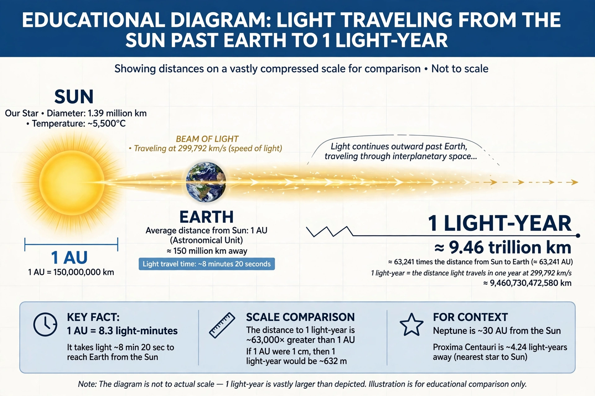

From Wikipedia, the free encyclopedia
 | |
| Symbol | ly |
|---|---|
| Exact value | 9,460,730,472,580.8 km |
| In AU | 63,241.1 astronomical units |
| In parsecs | 0.306601 pc |
A light-year, alternatively spelled light year (ly), is a unit of length used to express astronomical distances and is defined as the distance that light travels in a vacuum in one Julian year (365.25 days). It is exactly 9,460,730,472,580.8 kilometres, or about 5.88 trillion miles.
Because "year" is included in the term, it is sometimes misinterpreted as a unit of time. The light-year is most often used when expressing distances to stars and other distances on a galactic scale, especially in non-specialist contexts. The unit most commonly used in professional astronomy is the parsec (approximately 3.26 light-years).
The nearest star to the Sun, Proxima Centauri, is about 4.25 light-years away. The Milky Way is roughly 100,000 light-years across, and the Large Magellanic Cloud lies about 163,000 light-years distant. Because light takes time to travel, observing an object a given number of light-years away means seeing it as it was that many years in the past—a fact fundamental to observational cosmology.
The first successful measurement of a star's distance, by Friedrich Bessel in 1838 using parallax for 61 Cygni, gave a value expressed in light-years shortly thereafter; the term appeared in print by 1851. Distances in light-years grew in prominence as the scale of the universe was established in the 20th century.